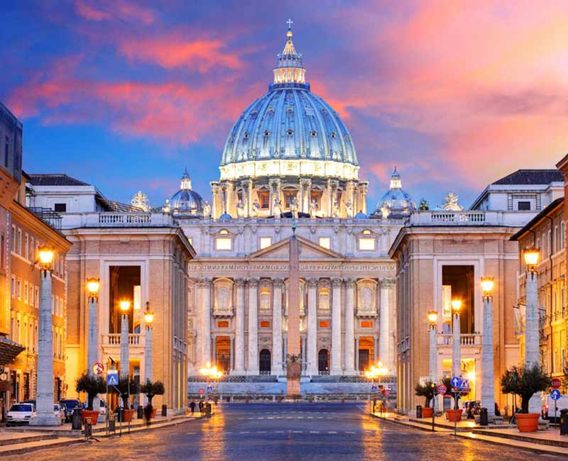
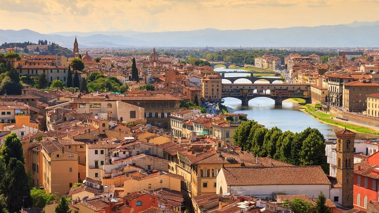
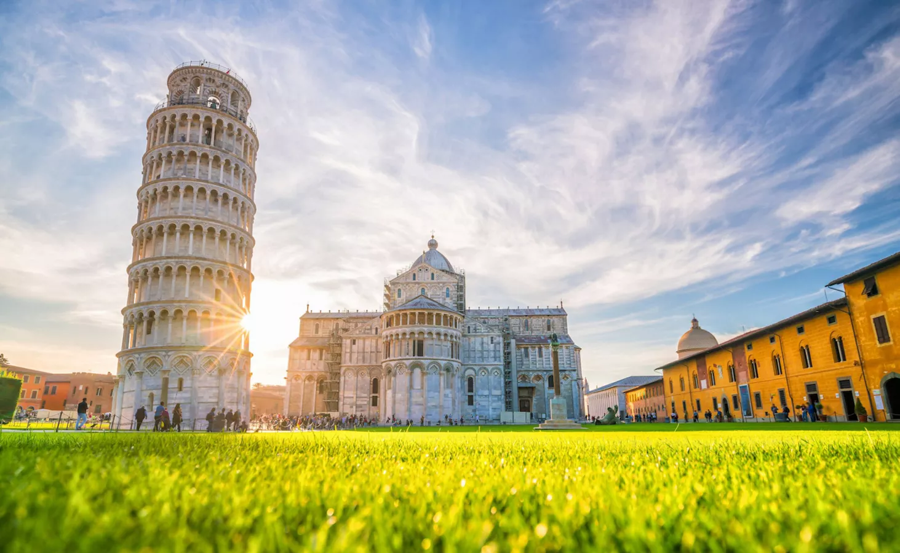
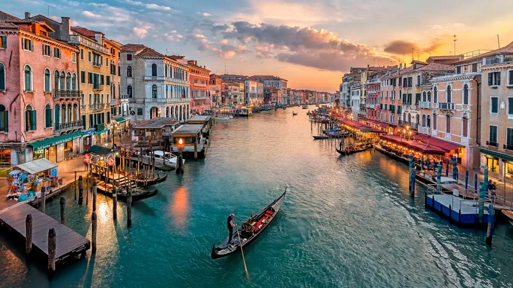
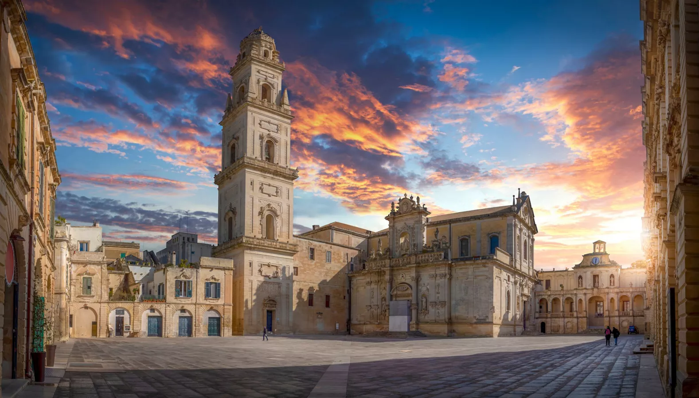
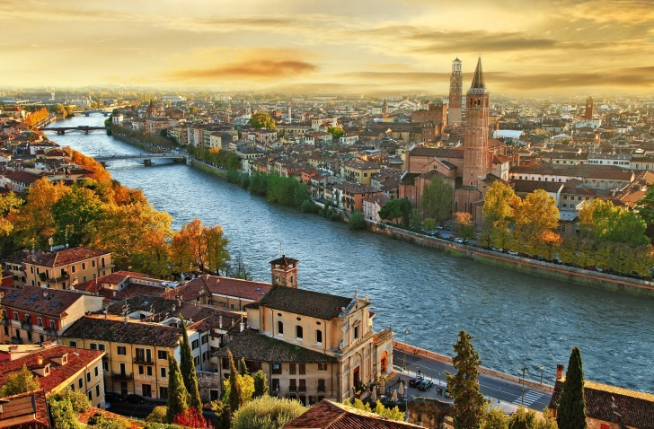
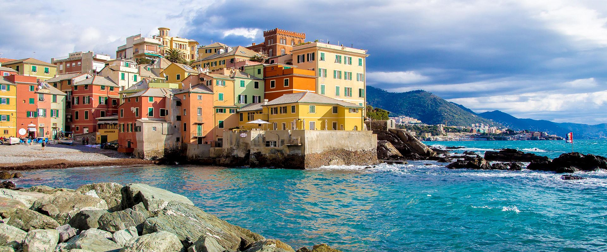
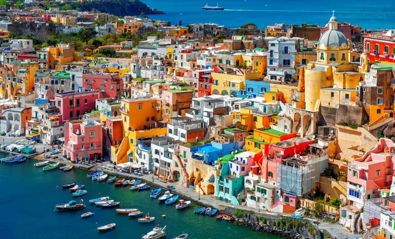
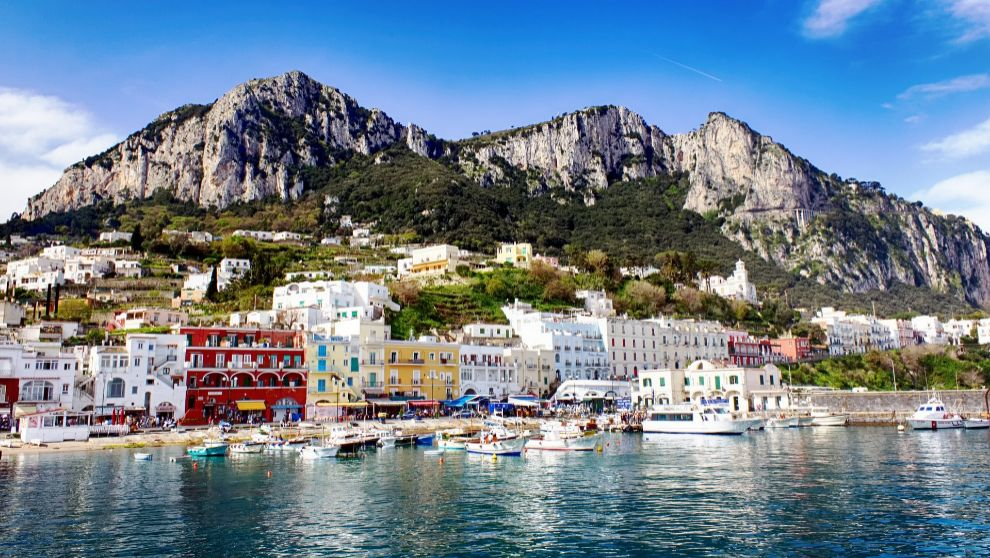

Roma es una ciudad hermosa, con la ventaja añadida de ser muy fácil de visitar a pie. Está lleno de monumentos antiguos, hermosas plazas y museos. Aquí están los que hay que ver:
- El Coliseo
- El foro romano
- El Panteón
- Fuente de Trevi
- Plaza Navona
Si estás de visita en Roma, también debes ir a la Ciudad del Vaticano. No te pierdas lo siguiente:
- Plaza de San Pedro
- Basílica de San Pedro, la basílica más grande del mundo
- La Capilla Sixtina y la obra mayor de Miguel Ángel: El Juicio Final
- Y todos los museos del Vaticano
Su restaurante más conocido es: Armando Al Pantheon, se disfruta de pastas y comida típica de este país.

Florencia, sin duda la ciudad más bella de la Toscana, alberga numerosos museos y palacios renacentistas. El
patrimonio cultural es inmenso: la mitad de las obras de arte italianas se encuentran en Florencia.
Lugares de visita imprescindibles en Florencia:
- El Duomo
- La galería Uffizi y sus famosas pinturas
- La basílica de San Miniato al Monte, desde la cual se tiene una vista panorámica de Florencia. Un consejo: ir allí para la puesta de sol
- Piazza della Signoria: un verdadero museo al aire libre
- Cúpula del Brunelleschi: subir 400 escalones para una vista de 360 grados de Florencia. No olvides reservar tus entradas con antelación para evitar la cola.
Y no olvides visitar la campiña toscana, ¡famosa por ser la más bella de Italia!
Su restaurante más conocido es: Trattoria Mario, la comida es muy casera, cambia casi todos los días e incluso puede que toque compartir mesa con otras personas.
Cuando escuchas hablar de Pisa, lo primero que te viene a la mente es probablemente la famosa torre inclinada, el símbolo de la ciudad. Sin embargo, también hay otras cosas que ver en la ciudad.
- La Piazza dei Miracoli, es el corazón turístico de la ciudad: ¡todos los monumentos famosos de Pisa se encuentran allí!
- La torre de Pisa, con su entrada de 20€ (¡puede ser un precio sorprendente!)
- La Catedral de Nuestra Señora de la Asunción
- El Baptisterio de San Juan de Pisa
- Cementerio Monumental Camposanto
- La Piazza dei Cavalieri, una pequeña plaza típica italiana con menos turistas
- Borgo Stretto: punto de compras y lugar ideal para comer o tomar una copa en uno de los numerosos restaurantes.

Venecia es una de las ciudades más turísticas de Europa, una gran elección si quieres pasar un fin de semana o más en Italia. Con sus numerosos canales y sus famosos paseos en góndola, es también el destino perfecto para una estancia romántica.
- Plaza de San Marcos: corazón de la ciudad y zona de las palomas
- La Basílica de San Marcos y sus mosaicos dorados
- El Palacio Ducal
- El Puente de los Suspiros: El famoso puente de Venecia
- Las islas de Murano (mundialmente famosas por la fabricación de vidrio) y Burano con sus típicas y coloridas casas.
Su restaurante más conocido es: Osteria Antico Giardinetto, aparte de disfrutar de pastas y pizza, este restaurante tiene mucha variedad de pescados y mariscos
Probablemente ya hayas visto fotos de ellos, estos espectaculares y coloridos pueblos ¡se encuentran entre
los lugares más famosos de Italia!
Los pueblos de las Cinque Terre son los siguientes:
- Monterosso al mare: situado en la parte más septentrional, es el más grande de los pueblos y el único con una gran playa de arena.
- Vernazza con sus coloridas casas y su pequeño puerto.
- A Corniglia, la única que no está conectada al mar, se accede por una escalera de más de 350 escalones.
- Manorala: el pueblo más antiguo.
- Riomaggiore, situada en el extremo oriental de las Cinque Terre.

Es una ciudad barroca de gran belleza. Hay iglesias, museos y palacios por todas partes, todos compartiendo el mismo estilo arquitectónico.
- La Basilique santa Croce
- La Basílica de la Santa Cruz
- El centro histórico
- La cúpula de Lecce
- Plaza de Sant’Oronzo
- Museo Faggiano

Verona es la ciudad del amor y del destino trágico de Romeo y Julieta. Todo el mundo ya ha oído hablar de ello, pero ¿sabes qué es lo mejor que se puede hacer en la ciudad?
- La casa de Julieta: la oportunidad de admirar el famoso balcón y tomar una foto con su amante.
- La piazza Bra, donde se encuentra la arena de Verona
- Piazza delle Erbe con su mercado, bares y terrazas de restaurantes
- La basílica de San Zeno Maggiore, la iglesia más antigua de Verona
- El Castelvecchio, un castillo del siglo XIV convertido en museo
Su restaurante más conocido es: Nastro Azzurro, Cocina tradicional con un toque más sofisticado y materia prima de mucha calidad.

Génova es y ha sido históricamente siempre una ciudad portuaria. ¡Aquí nació Cristóbal Colón, uno de los aventureros más famosos de todos los tiempos! La ciudad también está llena de monumentos y sitios hermosos para admirar.
- El puerto de Génova donde podrás visitar el acuario y ver una réplica de un barco pirata. No olvides tomar el ascensor de cristal para disfrutar de una vista panorámica de la ciudad.
- El centro histórico con la plaza de los Ferrari y su hermosa fuente
- Camina por la Via Garibaldi y visita uno o más palacios como el palazzo reale, el palazzo bianco o el palazzo Rosso.
- Paseo por el Lungomare, un paseo marítimo de 3 km.
- Ir a Boccadasse, un antiguo pueblo de pescadores con casas de colores

Nápoles es la ciudad europea con el mayor centro histórico, así que puedes estar seguro de que hay muchas iglesias y monumentos que visitar en la ciudad. Nápoles es también muy famosa en todo el mundo por su gastronomía: la pizza (creada en el siglo XVII como alimento callejero para los napolitanos más pobres), así como la famosa salsa napolitana.
- Empieza por el centro histórico y su Catedral
- La Piazza del Plebiscito, una enorme y muy fotogénica plaza con bellos monumentos a su alrededor.
- El Parque Vigiliano y su magnífica vista sobre la bahía
- Visitar el museo arqueológico que alberga los objetos del sitio arqueológico de Pompeya
- Ir a Pompeya, situado a unos 40 minutos en autobús o tren de Nápoles y presenciar los daños causados por la erupción mortal del Vesubio.
Su restaurante más conocido es: L'Antica Pizzeria Da Michele , esta es la mejor pizzeria de a ciudad y con un excelente precio.

Desde Nápoles se puede tomar el ferry e ir a la isla de Capri para una excursión de un día.
- El puerto de Marina Grande. A continuación, debes tomar el funicular: te llevará directamente a la famosa Piazzetta, en el centro de Capri. Con sus terrazas de café y una magnífica vista sobre la bahía.
- Arco Naturale, un gran arco rocoso de 20 metros de altura.
- El mirador de Tragara, que también ofrece una magnífica vista.
- La gruta azul (Grotta Azzurra en italiano), que debe su nombre a la única acuarela que hay en su interior.
